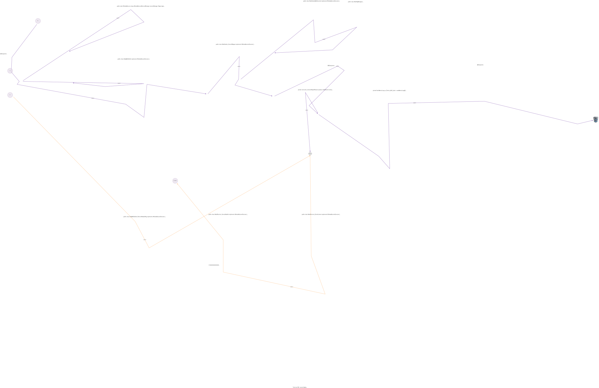

Introduction
- DrawAndChatApp is an App that supports::
- Drawing & Writing Text & Organize Containers on a File
- Communicate through the Internet on the File
- (Similar to how multiple people editing on a same OneNote file collaborately over the Internet.
But with much less Functionalities.)

- DrawAndChatApp is an App that supports::
Prior Clarification
- [Development Status] - This is only an Experimental project (treat this more like a Demo / simple Script / for Testing purpose only).
- Following Instructions are mainly based on
v0.2.35.XXX
Project Environment Requirements
- Java v17.0.2
- Kafka v kafka_2.13-3.1.0
- Mysql v8.0.28
How To Use
How to Use - plain functionality (in simple words)
*Use Procedure
- vv
- (Read through the instructions on Github)
- Download the released zip file from Github & Go to the File location
- Setup the Config in
application.yml- vv
- Setup Nothing -- if you want just the plain functionaity eg: draw / text / container ...;
- Setup the Server for Kafka -- if you want the plain functionaity + Network message communication by Kafka
- Setup the Database connection for Mysql -- if you want the plain functionaity + Save Load file by Mysql
- Activate the corresponding Spring Profile
(if you choose setup Nothing, the default will be profileplain
-- you dont need to do this step)
- vv
- Run cmd like following:
java -jar .\DrawAndChatApp-0.2.35.2-SNAPSHOT.jar --spring.config.additional-location=.\application.yml - A Window
DrawAndChatApp - Session init & control Pagewill open up - Click the Button
NewUseSend - Host - Start Drawing/Editing
- vv
*Overview (graph)
How to Use - Network message communication
*Use Procedure
- On both the Host & Guest side, setup the
application.yml- Provide Kafka Server ip address,
eg:: (this eg is: hosting it locally, mainly for testing purpose)cpy.rf.ntt.drc: det-DisableReceiveNetworkMsg-Kafka: false kafka: bootstrap.servers: "localhost:9092" # @edit_this[base on your Config] - Enable the Spring profile
ie::profiles.active: "plain, Enable_ReceiveNetworkMsg"
- Provide Kafka Server ip address,
- Start up the App in both Host & Guest side
- vv
- Click the Button
ClearAllMsg_InKafkaTopic- If there are old Kafka Event *remained* in the Message Queue (Kafka Topic) (-- didnt get consumed)
You will need to Clear those old Msg in Kafka Topic --> otherwise the Receiver will have Old & New Msg mix together - (experimental_project_flaw)
- If there are old Kafka Event *remained* in the Message Queue (Kafka Topic) (-- didnt get consumed)
- Click the Button
- On Host side - Click the Button
NewUseSend - HostOn Guest side - Click the ButtonReceiveNetworkMsg - Guest - Start Drawing/Editing in either side -- the File will be synced across the Internet
- On both the Host & Guest side, setup the
*Overview (graph)
How to Use - Save Load file
*Prior Clarification
- The functionality of Save Load file is supported poorly at current stage.
Do not rely on this -- you may or may not experience datalost. - The process requires you to clear the database (&/ message queue, if you need),
it should only clear the
specific database (Mysql databasedb_drawandchat_01/db_drawandchat_02) &
specific message queue (Kafka TopicDrc_NodeEvent_All-Host&Drc_NodeEvent_All-Guest)
for this App. - the code is in::
Code
com.redfrog.note.database.DbThreadHelper.clear_TabelRows_db01()public static final String queryStrf_GetAllTableName = "SELECT table_name FROM information_schema.tables WHERE table_schema = '%s';"; public static final String queryStrf_RemoveAllRowInATable = "TRUNCATE TABLE %s;"; public static final String tableName_hibernate_sequence = "hibernate_sequence"; @Transactional(value = "txm_01") public List<String> clear_TabelRows_db01() { Query query_GetAllTableName = em_01.createNativeQuery(String.format(queryStrf_GetAllTableName, DbName.db_drawandchat_01)); List<String> resultList_AllTableName = query_GetAllTableName.getResultList(); System.out.println(">> clear_TabelRows_db01() :: " + DbOccupation.DbName.db_drawandchat_01 + " :: " + Thread.currentThread().getName() + " :: " + resultList_AllTableName + " :: " + em_01); if (resultList_AllTableName.size() > 5) { String msg = "Seems deleting a lot of tables es rows? Is this Sql correct? :: numTable=" + resultList_AllTableName.size(); System.out.println(msg); throw new Error(msg); } for (String tableName : resultList_AllTableName) { if (!tableName.equals(tableName_hibernate_sequence)) { Query query_RemoveAllRowInATable = em_01.createNativeQuery(String.format(queryStrf_RemoveAllRowInATable, tableName)); query_RemoveAllRowInATable.executeUpdate(); } else { System.out.println("Do nothing with table :: " + tableName_hibernate_sequence); } } return resultList_AllTableName; }
com.redfrog.note.util.KafkaUtil.clear_AllMsg_debug(KafkaConfig)public static void clear_AllMsg_debug(KafkaConfig kafkaConfig) { String msg = "The way clear_AllMsg() implemented is very bad -- delete Records in a Kafka topic is possible, " + "\n" + "but doesnt have a good API in Java (-- missing sufficient info to get Access to the Partition & the Offset of the Message)."; System.out.println(msg); System.err.println(msg); Consumer<String, ? extends Object> kConsumer_AnyRecord = new KafkaConsumer<>(kafkaConfig.kProp_Consumer); kConsumer_AnyRecord.subscribe(Arrays.asList(kafkaConfig.kTopicName_Send_NodeEvent_All, kafkaConfig.kTopicName_Receive_NodeEvent_All)); while (true) { try { ConsumerRecords<String, ? extends Object> consumerRecords = kConsumer_AnyRecord.poll(Duration.ofMillis(1200)); if (consumerRecords.isEmpty()) { System.out.println("Seems all msg drained."); kConsumer_AnyRecord.close(); break; } for (ConsumerRecord<String, ? extends Object> consumerRecord : consumerRecords) { System.out.println("Draining :: " + consumerRecord); // } } catch (WakeupException e) { System.out.println("Seems we are shutting down :: " + e); kConsumer_AnyRecord.close(); } } }
- For testing purpose, this is kinda ok (bad still).
Dont do this in production env.
- The functionality of Save Load file is supported poorly at current stage.
*Internal Design & Concept
- The *internal* of how save & load works is::
mysqldump -u USERNAME -pPASSWORD DBNAME > /path/to/location/backup.sql
see https://stackoverflow.com/questions/4283168/how-can-i-backup-a-mysql-database-from-java
mysql -u USERNAME -pPASSWORD --database DBNAME < /path/to/location/backup.sql
- The *internal* of how save & load works is::
*Overview (graph)
*Use Procedure
- (On the Host side (there is no need for Guest, if you dont needt Network communication),)
setup theapplication.yml- Provide Database connection needed info
Provide Path to Mysql & ...
eg::spring: config: activate: on-profile: "Enable_LoadSaveFile | prod" ds-mysql-01: driver-class-name: com.mysql.cj.jdbc.Driver hibernate.dialect: org.hibernate.dialect.MySQL5Dialect jdbc-url: jdbc:mysql://localhost:3306/db_drawandchat_01 # @edit_this[base on your Config] # database name is hardcoded (seems); (other type of database (not mysql) may not be supported); password: mysql # @edit_this[base on your Config] username: root # @edit_this[base on your Config] ds-mysql-02: # db02 is mainly for debugging driver-class-name: com.mysql.cj.jdbc.Driver hibernate.dialect: org.hibernate.dialect.MySQL5Dialect jdbc-url: jdbc:mysql://localhost:3306/db_drawandchat_02 # @edit_this[^] password: mysql # @edit_this[^] # password & username should be same as db01 username: root # @edit_this[^] cpy.rf.ntt.drc: det-DisableLoadSaveFile-Mysql: false loadSaveFile: pathStr-drcFileSave: "H:\\DrawAndChatApp_db" # @edit_this[base on your Config] # default path for save & load the file pathStr-mysqldump: "C:\\Program Files\\MySQL\\MySQL Server 8.0\\bin\\mysqldump.exe" # @edit_this[base on your Config] # path to mysqldump pathStr-mysql: "C:\\Program Files\\MySQL\\MySQL Server 8.0\\bin\\mysql.exe" # @edit_this[base on your Config] # path to mysql # you can just put `mysql` if your env var is properly set (seems) - Enable the Spring profile
ie::profiles.active: "plain, Enable_LoadSaveFile"
- Provide Database connection needed info
- Open the App
- On Host side - Click the Button
NewUseSend - Host- Make sure you are using an *Empty* database for a Session (that you are going to init) (experimental_project_flaw) <see below>
- Start Drawing/Editing
- Close the
Editing File Window - vv
- Close confirm?
Sqlem.persist()is slow & may still be going in the background (just for Saving your file)
-- can take10s ~ 40s+ ~ ?sto finish all persist.
You need to wait for that to be finished.
Check the Log to see if its done. - You can select
"Auto Close When Sql persist is Done ".- Please wait for Sql Persist
In the meantime, dont do more actions.
- eg: click inside on the Closing Window.
- eg: start another session.
- eg: close this window.
Just wait only (& watch the log if needed).
If persist is still not done after ~3min, will force shutdown & experience datalost
If the process is taking too long, you may Force Terminate it, but will experience datalost.
- Please wait for Sql Persist
- You can select
"Force Close Right Now ".- (If you dont care about Saving the file)
- Close confirm?
- Wait until Persist is done.
- Enter the path you want to save the file to
- Click the Button
SaveFile(inDrawAndChatApp - Session init & control Page) - Wait until Save is done.
- Close the
Session init Page(close the App) - ---
- Open the App
- vv
- Select a database you want to use for this Session in
Force use given db
(On Host side - default isdb_drawandchat_01) - (On Host side - pick the database you chose for this session)
Click the ButtonClearAllTableRows_InGivenDb- Make sure you are using an *Empty* database for a Session (that you are going to init)
--ie: *clear* the data in the database every time before you init a Session.
(for New Session / Receive Session only; Load Session will automatically overwrite the existing database)
Otherwise, Existing Old data will be _ cleared / mixed with New Data _ for the file in this Session
-- the Saved file will be in a mess (Unless you dont care about saving the file). - If you have existing old data, following Warning would be printed::
public static final String TextWarn_OverwriteOrAppendDb = """ [Warning: 80% - @datalost] det_ExistDataIn_EntityGeneral != 0; for db :: %s Detected Existing Old Data in this Db. """ + Text_ClearAllTableRows_InGivenDb + """ Basing on your selection on det_AllowDbOverwriteOrAppend :: %s If true: -> New Data will be Appended to the Existing Old Data - for New session / Receive session. -> Existing Old Data will be Cleared, New Data will be Written to an empty/cleared database - for Load session. If false: -> Throw an Error, Session Abort, No data are cleared or written. """;
Both Host & Guest will need to exist the session, clear the database, clear the msgQueue, restart the session. (experimental_project_flaw)
- Make sure you are using an *Empty* database for a Session (that you are going to init)
- Select a database you want to use for this Session in
- (On Host side -)
Enter the path you want to load the file from +
Click the ButtonLoadSaveFile - Host - Wait until Load is done.
- Start Drawing/Editing (from the saved file)
- (On the Host side (there is no need for Guest, if you dont needt Network communication),)
How to Use - Network message communication + Save Load file
*Use Procedure
- On both the Host & Guest side, setup the
application.yml- Provide Kafka Server ip address,
<see above> - Provide Database connection needed info
<see above> - Enable the Spring profile
ie::profiles.active: "Enable_ReceiveNetworkMsg, Enable_LoadSaveFile"
- Provide Kafka Server ip address,
- Open the App
- vv
- Before start, clear the database, clear the msgQueue <see above>
- On Host side - Click the Button
NewUseSend - Host/
On Guest side - Click the ButtonReceiveNetworkMsg - Guest - Start Drawing/Editing
- Close the
Editing File Window - vv
- <see above>
- Wait until Persist is done.
- Enter the path you want to save the file to
- Click the Button
SaveFile(inDrawAndChatApp - Session init & control Page)- It only requires One Side Host/Guest to Save the file.
Whoever Saved, will be the Host & Load the saved file, in the Next Time.
The other will be the Guest.
- It only requires One Side Host/Guest to Save the file.
- Wait until Save is done.
- Close the
Session init Page(close the App) - ---
- Open the App
- vv
- Select a database you want to use for this Session in
Force use given db
On Host side - default isdb_drawandchat_01
On Guest side - default isdb_drawandchat_02- though, you should prevent the use of
db_drawandchat_02,
as its mainly for debugging -- so the same PC can have both Host & Guest running at the same time
& its un-optimized -- even slower in persist
- though, you should prevent the use of
- On Host side - pick the database you chose for this session
On Guest side - pick the database you chose for this session
Click the ButtonClearAllTableRows_InGivenDb- <see above>
- If you have existing old data, following warning would be printed::
<see above>
Both Host & Guest will need to exit the session, clear the database, clear the msgQueue, restart the session. (experimental_project_flaw)
- Select a database you want to use for this Session in
- On Host side -
Enter the path you want to load the file from +
Click the ButtonLoadSaveFile - Host/
On Guest side -
Click the ButtonReceiveNetworkMsg - Guest - Wait until Load is done.
- Start Drawing/Editing (from the saved file)
- On both the Host & Guest side, setup the
Internal Design & Concept
Main Java class
DrawAndChatVmis the central -- of this Project
-- mainly dealing with the GUI functionality & business logicNodeSender_ConvertWrapper&NodeSender_EventAnnouncerare the central -- of DataCommunication
-- for Sending & Persist the Event (& constructing the underlying model (at least attemp to...) (abandont now))NodeSig&NodeEventare the backbone data structure -- of all the Node & NodeEvent (all the business objects)
-- for Serialization across the Network & Persist into the Database (& the underlying model)SessionManager&WindowSessionis the central -- for the management & linkage across all the classes in the Project
-- for managing & picking among the 3 Sessions --[NewUseSend, ReceiveNetworkMsg, LoadSaveFile]
-- for linking Database & MessageQueue to the SessionDrawAndChatAppSessionInitis the first contact when you start the App
-- for init Sessions
Code Procedure & Data Flow
DrawAndChatAppSessionInit
init sessionSessionManager
init & create aWindowSession
& associate aDbOccupationto the Session
& initKafkaConfigDrawAndChatVm
deal with GUI
initNodeSender_ConvertWrapper&NodeReceiver_EventListenerDrawAndChatVm_ReceiveNetworkMsg&DrawAndChatVm_LoadSaveFileare just variations ofDrawAndChatVm
they both delegate the actual work back toDrawAndChatVmDrawAndChatVm-- deal with NewUseSend session (-- actually backbone of all Sessions)DrawAndChatVm_ReceiveNetworkMsg-- deal with ReceiveNetworkMsg sessionDrawAndChatVm_LoadSaveFile-- deal with LoadSaveFile sessionNodeSender_ConvertWrapper&NodeReceiver_ConvertHandlerare the bridges betweenDrawAndChatVm& MessageQueue/Database
Data flows like this::DrawAndChatVm
>NodeSender_ConvertWrapper>NodeSender_EventAnnouncer
>NodeReceiver_EventListener>NodeReceiver_ConvertHandler
> ...
NodeSender_ConvertWrapper
wrapper for functions dealing with GUI
convertJavafxNodetoNodeSig/ associate / find them inNodeSigManager
construct the underlying modelNodeCreatorAndConvertor
actually create & convertJavafxNodeto/fromNodeSigNodeSender_EventAnnouncer
create theNodeEvent
send theNodeEvent
persist to DatabaseDbThreadHelper
actually persist to Database
basing on config inMultipleDbSpringConfigSerializationUtilsSerializer&SerializationUtilsDeserializer
deal with Serialization in KafkaNodeReceiver_EventListener
receive theNodeEvent
persist to Datbase
determine & handle theNodeEventNodeReceiver_ConvertHandler
actually handle theNodeEvent
Mechanism & Design
This App is built using a mechanism - Event Sourcing
-- every single action is sent by MsgBroker & persist into Database -- as an Event.
Main Components in GUI
- Root Panel & Background Canvas
- Panel (a general Container)
- TextArea
- Canvas
- Linkage Arrow
- IndexCircle
- (Resize_Handler)
- (PaneWrap)
*Overview (graph)
- [Uml of most of the Java Class]
- [Code Flow]

- [Uml of most of the Java Class]
Functionalities & Hotkeys
Functionality Hotkey Description Activated When * Freehand Drawing in Canvas LButton (drag) Focus on Canvas create a Panel (+ a TextArea) ^n (nest supported) Focus on Panel / Root Panel move a Node ^!LButton (drag) (You need to click on the PaneWrap of the Node) Focus on PaneWrap of the Node remove a Node delete (You need to click on the PaneWrap of the Node) Focus on PaneWrap of the Node focus on a Node LButton (You need to click on the PaneWrap of the Node) Global draw an Arrow
to link 2 Nodes^LButton
RButton (to Cancel)click on Node AA to Start
&
click on Node BB to End
(note: its very thin & hard to be clicked to Focus on)Focus on Panel / PaneWrap of the Node undo ^z (undo when focusing in TextArea is diff) Focus on Panel / Root Panel redo ^+z Focus on Panel / Root Panel clear Drawing in Canvas RButton (drag) Focus on Canvas create a TextArea ^+b Focus on Panel / Root Panel create a Canvas ^m Focus on Panel / Root Panel type on TextArea (bi-dir) (Tab to focus on) Focus on TextArea resize a Node ^!LButton (drag, on the Resize_Handler) Focus on Resize_Handler of the Node move Layer of a Node PgUp
PgDn
Home
End(Note:
the Layer of the Canvas in the Background
can be moved too)Focus on PaneWrap of the Node zoom a Node ^WheelUp
^WheelDown
F1F1 reset the zoom Focus on PaneWrap of the Node move the Background (Root Panel) ^!MButton (drag)
F4F4 reset the position Global move the MiniMap ^!LButton (drag) Focus on the MiniMap create a IndexCircle ^i
^1 ^2 ^3 ^4 ^5^i increment index by 1
^1 reset index to 1Focus on Panel / Root Panel change Text on IndexCircle (Tab & Type the Text) Focus on the IndexCircle copy a Node Not supported cut a Node ^x Focus on PaneWrap of the Node paste a Node ^v cut a Node
&
Focus on Panel / Root Panelchange Pen Color of Canvas !0
!1 !2 !3 !4 !5 !6 !7 !8!0 is the original blue color
(Note:
if the Canvas is not focused (to receive hotkey),
you can Tab to focus on it)Focus on Canvas - * annotate
- Ahk Hotkey style Notation
- ^ = Ctrl
- ! = Alt
- + = Shift
- LButton = Left Mouse Click
- The order of the Table looks messy,
cuz its kinda base on the Time the functionalities are added (implemented) to the App.
- Ahk Hotkey style Notation
Development Status
- This is only an Experimental project (treat this more like a Demo / simple Script / for Testing purpose only).
Do Not expect the code runs good enough in a real production environment -- it may be buggy. - Do not use this a Library, its API is not defined. -- its intended to be only used as a GUI application.
- The code is still under drafting & very messy.
You can see a lot of Bad coding pratice.
eg::- abusing the use of
static - a lot of things are
public - field reference comes from nowhere
- the way some method implemented is fragile, error prone, just a workaround
- omit some config that is required to make the App less buggy
- ...
- abusing the use of
- Do not try to understand / modify the code, as they are badly written.
- The code is Slow
- The code doesnt fully Utilize the power of Spring DI & mix with other instance management designs
- This is only an Experimental project (treat this more like a Demo / simple Script / for Testing purpose only).
Technology Stack
- JavaFx
- Kafka
- Mysql + Hibernate
- Spring
Design Difficulties & Problems facing
- Underlying Model
- In the original design of this Project,
there was an intention to build a underlying model that models everything (eg: Gui components ...).
But as the Project grows, this becomes harder to implement & takes too much time. And was abandoned.
- In the original design of this Project,
- Undo Manager
- Implementing Undo/Redo is usually not easy. (Similar to implement Transaction rollback.)
But turns out, it wasnt that difficult in this Project (at least, at current stage) (when underlying model is out of concern).
- Implementing Undo/Redo is usually not easy. (Similar to implement Transaction rollback.)
- Session Management
- Session management was not easy. At least, the structure of coding did not appear to be clear, (cuz this was not planed origianlly).
The whole project was kinda rebuilt due to this.
And the management of many Spring Beans was messed up, many of them were removed during the rebuilt.
Considering to use@Scope("prototype")(but not sure how well it will do).
- Session management was not easy. At least, the structure of coding did not appear to be clear, (cuz this was not planed origianlly).
- Multiple Database Configuration
- If I fall back to only use Hibernate, maybe the Config would be more clear.
But since Spring Boot is used, I tried to config things in Spring boot.
However, having multiple Databases (& multiple Transaction Managers) in Spring boot Config doesnt seem like a common task?
The configuration is actually a little messy in the code.
And this dramtically affected how I use the Transaction Manager & Database Persist (resulted in a very bad way of coding).
- If I fall back to only use Hibernate, maybe the Config would be more clear.
- Speed of Persist to Database (& Size of the Saved File)
- Persist to Database is very Slow. This is currently the Key & Serious Problem I am facing.
Following are the reasons due to & attempts to resolve:: - Event Sourcing
- Event Sourcing is used -- there are a lot of things to persist
-- every single action triggers 1~10+ Events to persist & 1~2+ Objects (mostly Nodes, in this project) to persist. - Event Sourcing is used -- every single event will have to be a complete new snapshot & unmodifiable.
- Plus, an Event can be associated to an Object & many Events can come from the same Object & the internal field of the Object can be changed at any time.
This means, not only: I need to persist a New Event every time.
but also: I have to create a New Copy of the Object every time to persist with the Event.- You cannot use Update to change the existing Object in the database (instead of persisting a New Object).
Because that means you are changing the Past History & breaks the whole point of Event Sourcing.
- You cannot use Update to change the existing Object in the database (instead of persisting a New Object).
- Optimizing this will be complex.
- Plus, an Event can be associated to an Object & many Events can come from the same Object & the internal field of the Object can be changed at any time.
- Event Sourcing is used -- there are a lot of things to persist
- Data Structure & Blob
- I didnt spent too much time on optimizing the data structure to Persist into the Database.
Sometimes I just persist a whole Blob to save my time of coding.- Pros
- Increase the speed of persist & access.
- Less concern about the data structure & what to persist.
- Fits well with Event sourcing, as its kinda immutable & no concern of Id / Transient / Cascade things...
- Cons
- Large file size
- Bad data structure
- Pros
- I didnt spent too much time on optimizing the data structure to Persist into the Database.
- Data Structure & Inheritance
- The strategy was originally chosen to be
@Inheritance(strategy = InheritanceType.JOINED) - But it was changed to
@Inheritance(strategy = InheritanceType.SINGLE_TABLE)
at later stage.
As this Greatly Increases the Speed of Database Query.
- The strategy was originally chosen to be
- Batch Persist & Mysql
- Manual Batching was implemented to speed up the Persist.
- Hibernate Batching was also enabled.
However, it wont work.
Because the Database Im using is Mysql
& it doesnt support@GeneratedValue(strategy = GenerationType.SEQUENCE) - I tried to manually assign the Id to all the Entities (of course this is bad).
It appears to work, but didnt.- In earlier versions, the Speed Tested was ~12s to persist 6 panel (+ all the events behind it).
& this didnt change whether I use Batch or not.
- In earlier versions, the Speed Tested was ~12s to persist 6 panel (+ all the events behind it).
- Another way would be use JDBC to batch the Events,
but that means losing the powser of JPA
& requires a much more time on coding that.
- Reduction of Unnecessary Persist
- eg: Drag on an Object usually product a lot of Events for every Pixel it moves.
The App reduced to only persist the Key events into the Database.
While the App is chosen to still send All the events through the Network -- to provide a better synchronization on the editing of the file (its a trade off).
- eg: Drag on an Object usually product a lot of Events for every Pixel it moves.
- Caching
- Caching is not really related in this case (/ in this Project (at current stage)). And there is no Config on it.
- Persist to Database is very Slow. This is currently the Key & Serious Problem I am facing.
- Set Id to Null & detached & cascade & snapshot of the Event
- As said, >"many Events can come from the same Object & the internal field of the Object can be changed at any time"
- When Cascade is used
@OneToOne(cascade = { CascadeType.PERSIST }),
often times you can see the error of persisting a Detached Entity. - The problem is not its detached,
the problem is
Cascade Persist should persist a snapshot of the Object, (as the Object's field value would have changed in the meantime of 2 events).
instead of trying to detect this object already exist in database & throw an Error about this Object is detached. - A bad way to workaround with this, is to set the Id of this Object back to null.
But this really breaks the management of Entites in Hibernate.
- Serialization & Kafka Topic & Event Type
- Normally there should be different Serializer for diff Event type (I think)
- But, a generic Serializer was used in this Project for nearly All Event types.
- All the Events implements the
SerializableInterface. Protobufwill be considered.
- Message Order & Kafka Topic & Idempotent & Kafka Config
- To ensure the Order of the Event.
All the Events are Sent to the same Topic & same Partition with the same Key.- (But I dont think this is how categorization of Kafka Topic is used...)
- To ensure the Message arrive Exactly Once,
Idempotent could be used in Kafka.
But this will decrease the speed.
And I didnt config this. - Other Configs to ensure the Availablity of Kafka Brokers / handle Network failure / scaling were not configured.
- To ensure the Order of the Event.
- Database Transaction & Rollback & Multi Threading Concurrency
- (This is actually a Huge problem for this Project.)
- Database transaction was left to Spring.
(Tbh, I would rather to do it manually, so I have more control on this. Im not sure how Spring really handles this.)
But there is no Error Handling / Rollback. - Kafka Error handling was not implemented.
- Transaction span across multiple Database & Message Broker is not implemented (the situation refers to Microservices here).
- Multi threading may not be implemented safely in this Project.
- Multi Threading & Concurrent Editing & Transaction Atomicity
- There could be situation where:
one User UU is editing on an Object AA, another User VV is also editing on AA.
And there is Lag across the Network.
AA is under race condition. - The Atomicity will depend on (the Local Javafx Thread &) How Transaction is implemented across the Network.
And Transaction Rollback must be implemented when this happens.
A Qualification system of which User's Editing is valid is also needed.
A system to contact (access / passing info) among different Processes is also needed.
(involving Network, Message Broker, Database, Gui Thread, the design of transaction of business logic in this Application itself, ...) - This is not implemented (at current stage) as this is very complex.
(Again transaction is a big topic.)
- There could be situation where:
- Underlying Model
Q&A
- Unable to Get Started to Run this Project?
- As said in Section [How to Use - plain functionality (in simple words)]
If you just want the plain functionality (the profileplainis designed specifically for this case).
There is no setting you need to config (the default providedapplication.ymlis ready to use).
All you need to do is just to run the jar, like the following:java -jar .\DrawAndChatApp-0.2.35.2-SNAPSHOT.jar --spring.config.additional-location=.\application.yml
If this doesnt work, Idk how.
- As said in Section [How to Use - plain functionality (in simple words)]
- Github Issue (asking question & bug report & feature request)?
- As this Project is only Experimental & under drafting. There are sure lots of bugs & may not worth to be mentioned.
Post on Issue may not be supported. - Also, as said, this Project's code is under drafting & messy & not indented to be welly understood.
Attempts to read & suggest to fix the code are probably not worth it.
- As this Project is only Experimental & under drafting. There are sure lots of bugs & may not worth to be mentioned.
- Change Gui Style?
- Only very limited styles for the Gui Components are supported at current stage.
More styles may not be added currently.
- Only very limited styles for the Gui Components are supported at current stage.
- Why not FXML?
- May use, when the project is more complex & when I have more time to deal with Javafx.
- Why not Javascript?
- Javascript may be very helpful. But currently just want to do & try things in mostly Java.
- Reinventing the Wheels?
- There are probably some codes can be replaced by using some other library functions that works better.
They will be replaced if needed. Or, they are still under evoling / serve for different purposes.
- There are probably some codes can be replaced by using some other library functions that works better.
- Where is the Test Case?
- Didnt plan to build many test cases early originally.
- Later finds that testing a Gui App is not easy... So there are no Test cases currently.
- Where is the Comment & JavaDoc?
- The comments I had in the Code are hideously long & unreadable. So they are all removed.
- (Hopefully this doesnt break the code, it shouldnt but might remove some actual code accidentally during the process.)
- JavaDoc are not written, as this is only a Project under drafting & Not intended to be used as a library.
- The comments I had in the Code are hideously long & unreadable. So they are all removed.
- Consider Microservices / Docker?
- Not now.
- Unable to Get Started to Run this Project?